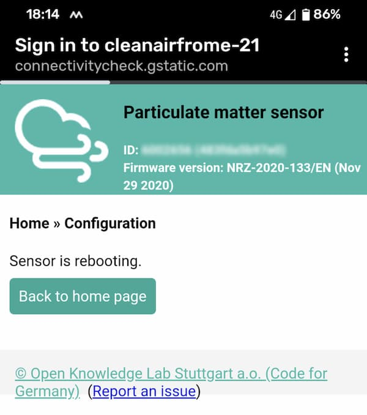
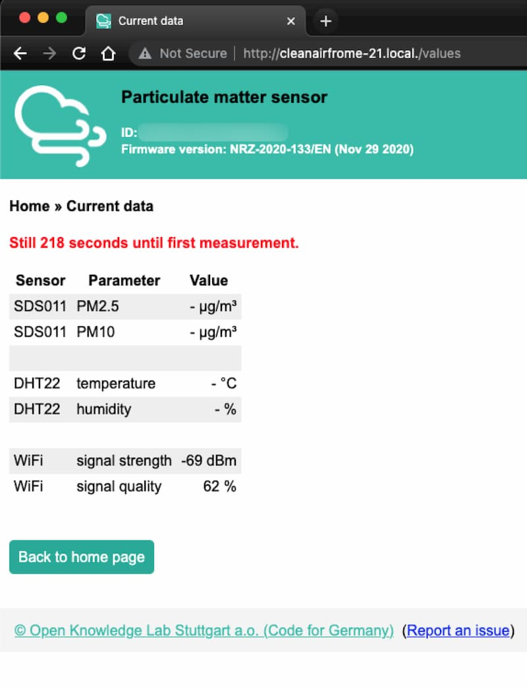

The sensor will then reboot and its own WiFi hotspot will disappear.

Once the sensor has rebooted, it will connect to your WiFi.
If you have a desktop or laptop computer available (this works with some mobile devices, but not all), the
sensor
should be visible by visiting http://cleanairfrome-21.local./values replacing
"21"
in that
example, with the number of your sensor.
The number of your sensor is written on the bottom of the unit.
Within 5 minutes, the sensor should take its first reading, then appear on
CleanAirFrome.
